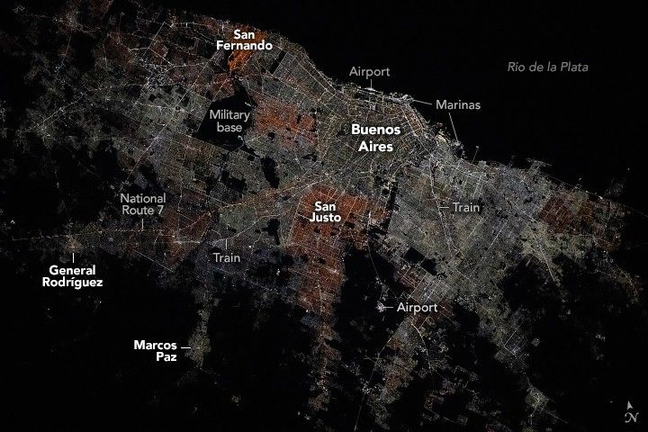

Traversing Buenos Aires at Night
An astronaut aboard the International Space Station captured this nighttime photograph of Buenos Aires, Argentina, while orbiting over waters off the coast of Uruguay. The varied hues of city lights in the Greater Buenos Aires area are bounded by the dark channel of the Rio de la Plata to the north-northeast. The density of nighttime lights decreases farther from the Greater Buenos Aires area as land use transitions into unlit agricultural areas.
Bright streetlights run alongside the public transport railroad system. Heading southwest, the tracks parallel National Route 7, which branches to connect the neighboring cities of General Rodríguez and Marcos Paz to downtown. National Route 7 stretches across the entire country from Buenos Aires to the Argentina–Chile border and is a section of the Pan-American Highway.
The Greater Buenos Aires area also hosts several airports and river harbors, many of which are connected via public transportation routes. In this image, the bright, rounded terminal of Ezeiza International Airport sits in a region of darkness south of the city, indicative of parks and an outdoor recreation area. Along the Rio de la Plata, Jorge Newbery International Airport is adjacent to shipping ports and marinas.
Variations in the color of nighttime light across a metropolis often correspond to the type of light sources used by individual municipalities. Low-pressure sodium lightbulbs typically give off warm yellow-orange hues. San Fernando, northwest of downtown, appears as a vibrant orange tone with somewhat similar lighting visible to the south and around San Justo. Downtown Buenos Aires and much of its surrounding area are illuminated by bright white lighting characteristic of modern light-emitting diode (LED) bulbs.